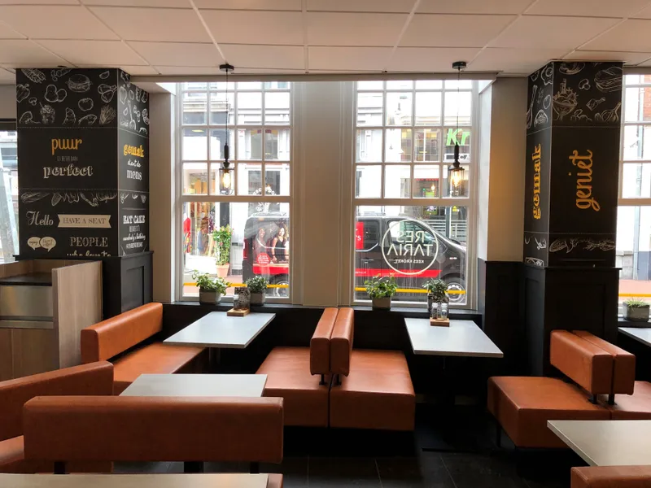

Allround medewerker
- Fulltime of parttime
- Uren in overleg
- Centrum Den Bosch
Jij neemt bestellingen op, bedient gasten en houdt het hoofd koel op piekmomenten. Ervaring is mooi meegenomen, maar geen eis.
Bekijk de vacatureDit zijn onze openstaande vacatures. Staat jouw baan er niet tussen? Een open sollicitatie mag altijd.
Jij neemt bestellingen op, bedient gasten en houdt het hoofd koel op piekmomenten. Ervaring is mooi meegenomen, maar geen eis.
Bekijk de vacatureDenk je dat je bij ons past, ook al staat er geen vacature voor open? Stuur een korte mail met wie je bent en wanneer je kunt werken.
Mail je sollicitatie
Mail kort wie je bent en wanneer je kunt. We lezen elke sollicitatie en nodigen je bij een match uit voor een kennismaking in de zaak.